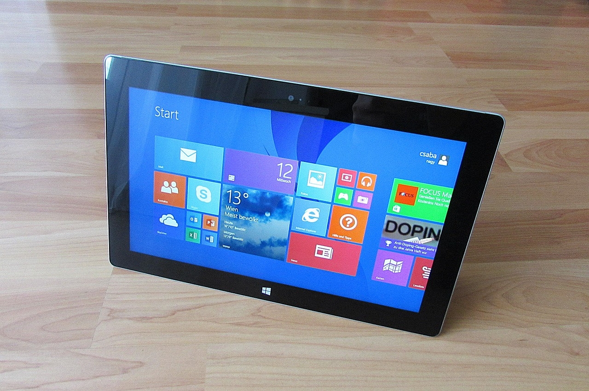

please click on menu items below for more information on each of our services:
At StarLife we specialise in the installation of CCTV equipment on your premises.
We cater for outdoor installation as well as installation of CCTV on the outside of your premises.
We cater for outdoor installation as well as installation of CCTV on the outside of your premises.
 At StarLife we install IT networks including cabling, configuration of switches and routers.
At StarLife we install IT networks including cabling, configuration of switches and routers.
We also install wireless networks and configure routers for domestic use.

At StarLife we install and configure Windows (as well as Linux) operating systems on your PC, laptop or network.
 We also offer a helpdesk facility at StarLife for IT or CCTV problems.
We also offer a helpdesk facility at StarLife for IT or CCTV problems.
WebSocket Test
Enter message to echo test below:
Press button below to echo test to website websocket.org: